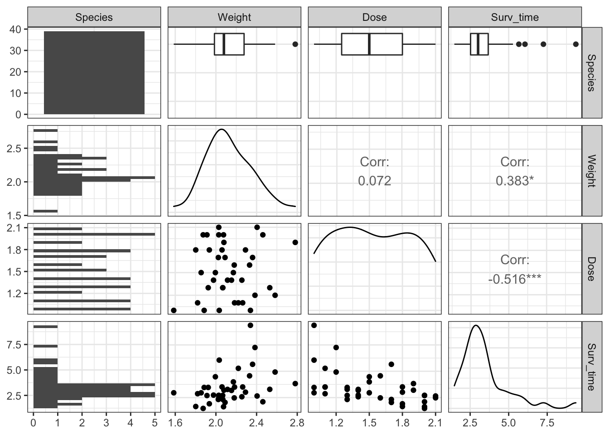
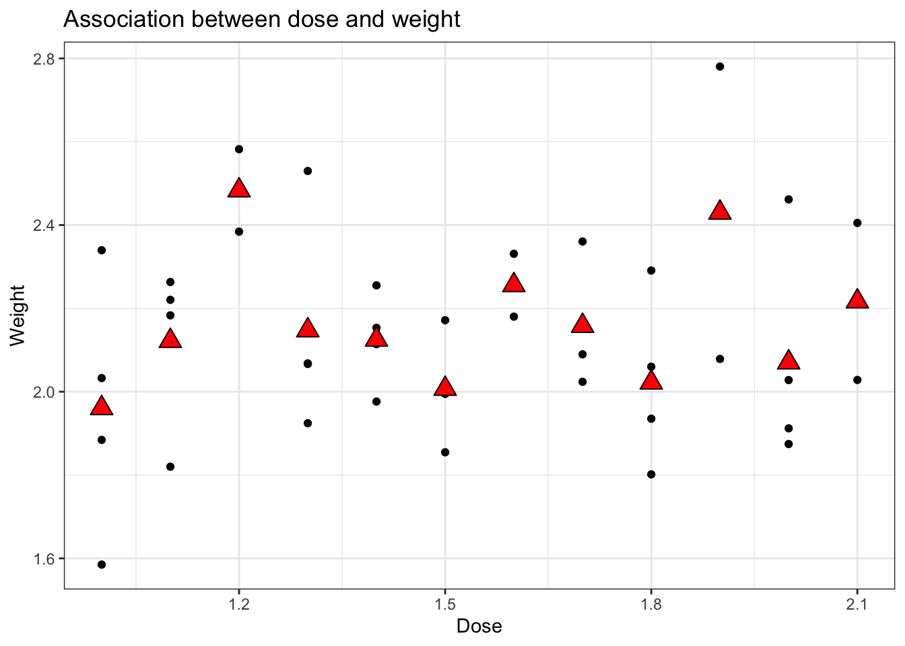
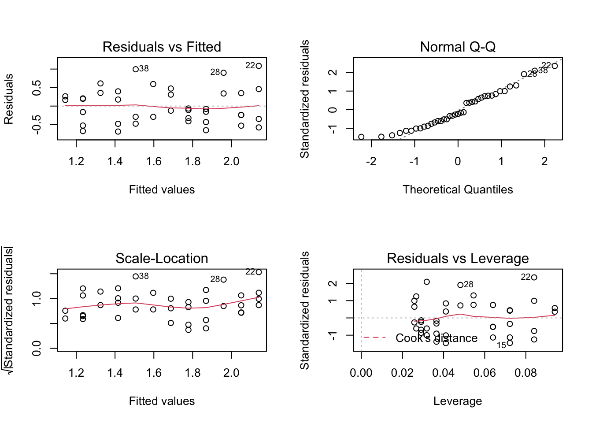
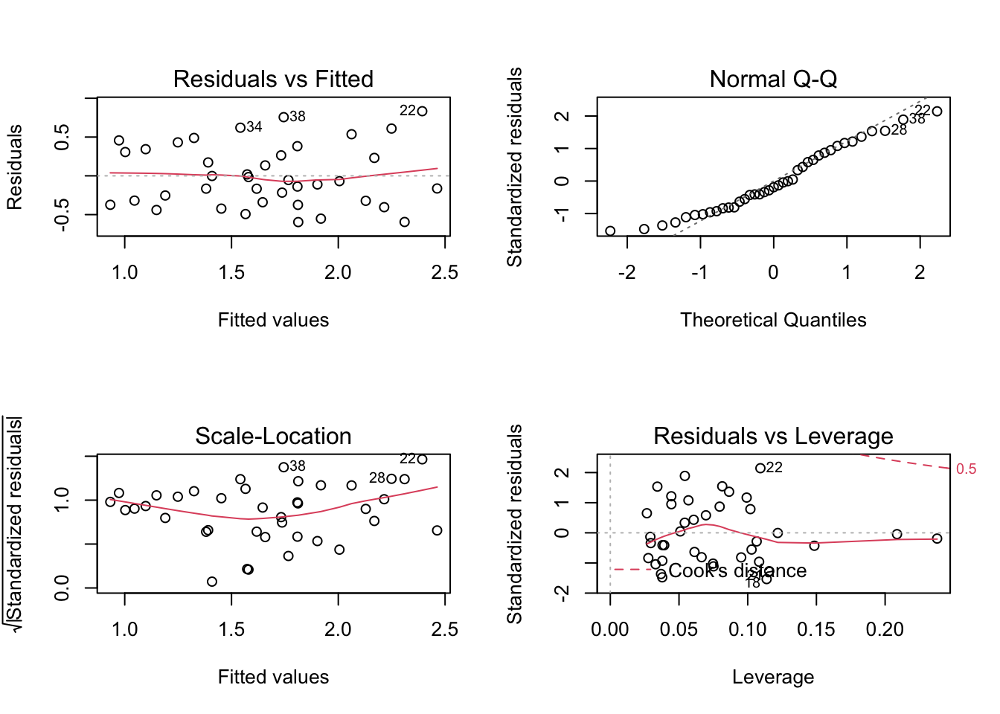
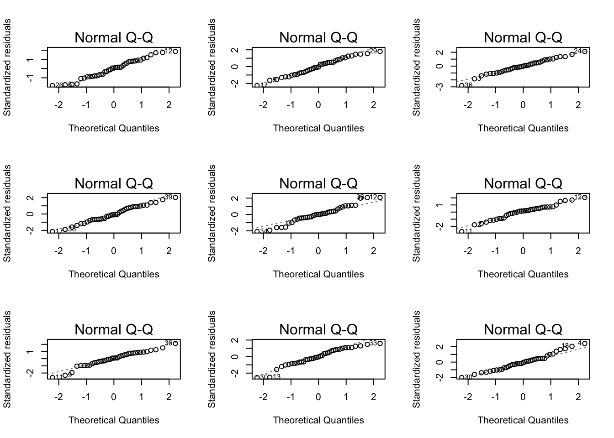

Fish tank dataset
In this experiment, 96 fish (dojofish, goldfish and zebrafish) were placed separately in a tank with two liters of water and a certain dose (in mg) of the poison EI-43,064. The resistance of the fish against the poison was measured as the amount of minutes the fish survived after being exposed to the poison (Surv_time, in minutes). Additionally, the weight of each fish was measured.
Goal
In this tutorial session we will focus on Dojo fish and we will model the survival time in function of the dose while correcting for the weight of the fish.
- We will first analyse the survival data by only considering the dose
- Next we will model the survival data with and additive model for dose and weight
Load libraries
library(tidyverse)
library(ggplot2)
#install.packages("GGally")
library(GGally)
library(car)
library(multcomp)
Import the data
poison <- read_csv("https://raw.githubusercontent.com/statOmics/PSLS21/data/poison.csv")
Data tidying
We can see a couple of things in the data that can be improved:
Capitalise the fist column name
Set the Species column as a factor
Change the species factor levels from 0, 1 and 2 to Dojofish, Goldfish and Zebrafish. Hint: use the fct_recode function.
In previous analysis on this dataset (Simple linear regression session), we performed a log-transformation on the response variable Surv_time to meet the normality and homoscedasticity assumptions of the linear model. Here, we will immediately work with log-transformed survival times; store these in the new variable log2Surv_time and remove the non-transformed values.
poison <- poison %>%
rename("Species" = "species") %>%
mutate(Species = as.factor(Species)) %>%
mutate(Species = fct_recode(Species, Dojofish = "0", Goldfish = "1", Zebrafish = "2"))
poison <- poison %>% filter(Species=="Dojofish")
Data exploration
Prior to the analysis, we should explore our data. To start our data exploration, we will make use of the ggpairs function of the GGally R package. This function will generate a visualization containing multiple panels, which display (1) univariate plots of the different variables in our dataset, (2) bivariate plots and (3) correlation coefficients between the different variables.
poison %>%
ggpairs + theme_bw()

Based on these plots, we observe that:
- The survival time seems to be associated with dose and fish weight.
From the tutorial of H6 we have seen that the fish weights were not nicely uniform across the different poison dosages due to the randomisation.
poison %>%
filter(Species == "Dojofish") %>%
ggplot(aes(x = Dose, y = Weight)) +
geom_point() +
ggtitle("Association between dose and weight") +
theme_bw() +
stat_summary(
geom = "point",
fun.y = "mean",
col = "black",
size = 4,
shape = 24,
fill = "red")
## Warning: `fun.y` is deprecated. Use `fun` instead.

Simple linear regression
This is the same regression model that we have already fit in the exercise session on simple linear regression, with Dose as the only explanatory variable for log2Surv_time.
# fit a linear regression model with 'Surv_time' as response variable and
# 'Dose' as predictor variabele
lm_simple <- lm(Surv_time %>% log2 ~ Dose, data=poison)
## display the diagnostic plots of the model
par(mfrow=c(2,2))
plot(lm_simple)

- The independence assumption was met because the fish were randomized to the dose.
- The linearity assumption is met.
- The normality assumption is met.
- The homoscedasticity assumption is met.
Finally, we look at the output of the model.
##
## Call:
## lm(formula = Surv_time %>% log2 ~ Dose, data = poison)
##
## Residuals:
## Min 1Q Median 3Q Max
## -0.6891 -0.3804 -0.1076 0.3452 1.0856
##
## Coefficients:
## Estimate Std. Error t value Pr(>|t|)
## (Intercept) 3.0469 0.3462 8.800 1.33e-10 ***
## Dose -0.9063 0.2208 -4.104 0.000215 ***
## ---
## Signif. codes: 0 '***' 0.001 '**' 0.01 '*' 0.05 '.' 0.1 ' ' 1
##
## Residual standard error: 0.4828 on 37 degrees of freedom
## Multiple R-squared: 0.3128, Adjusted R-squared: 0.2942
## F-statistic: 16.84 on 1 and 37 DF, p-value: 0.0002146
Or for an interpretation at the original scale (minutes in stead of log2 minutes):
2^(lm_simple$coef)["Dose"]
## Dose
## 0.5335551
2^(confint(lm_simple))[2,1]
## [1] 0.3912681
There is a very significant effect of the poison on survival of Dojofish (p< 0.001). Dojofish that are exposed to a higher dose of the poison will have a survival time that decrease on average with a factor 8.06 per gram of poison that is added (95% CI [22.58, 2.88]).
Analysis with additive effect for weight
Model specification
Here, we will estimate the effect of the poison while correcting for weight and we will add it as an additional covariate to our linear regression model, such that
\[
y_i=\beta_0+\beta_d x_d + \beta_g x_g + \epsilon_i,
\]
with \(\epsilon_i \text{ i.i.d. } N(0,\sigma^2)\).
Assumptions
The model will again be fit to allow for assessing the model assumptions
lm_additive <- lm(Surv_time %>% log2~ Dose + Weight, data = poison)
par(mfrow=c(2,2))
plot(lm_additive)

The assumption of independence, linearity and homoscedasticity are met.
The QQ-plot suggest that there might be some deviation from normality in the left tail of the distribution. However, when we would simulate data under the normality assumption, it seems that deviations of this size may be expected when normality is met:
set.seed(1406)
nobs <- nrow(poison)
data.frame(
y = c(lm_additive$res,
rnorm(nobs*8,
sd = sigma(lm_additive)
)
),
label = rep(
c("original data",
paste0("simulation ",1:8)),
each = nobs)) %>%
ggplot(aes(sample = y)) +
geom_qq() +
geom_qq_line() +
facet_wrap(~ label) +
theme_bw()

As such, all assumptions for linear regression seem to be valid.
Inference
We then inspect the results.
##
## Call:
## lm(formula = Surv_time %>% log2 ~ Dose + Weight, data = poison)
##
## Residuals:
## Min 1Q Median 3Q Max
## -0.59629 -0.33110 -0.06836 0.32507 0.83315
##
## Coefficients:
## Estimate Std. Error t value Pr(>|t|)
## (Intercept) 0.8294 0.6457 1.285 0.207119
## Dose -0.9590 0.1888 -5.081 1.17e-05 ***
## Weight 1.0783 0.2792 3.862 0.000451 ***
## ---
## Signif. codes: 0 '***' 0.001 '**' 0.01 '*' 0.05 '.' 0.1 ' ' 1
##
## Residual standard error: 0.4116 on 36 degrees of freedom
## Multiple R-squared: 0.5141, Adjusted R-squared: 0.4871
## F-statistic: 19.04 on 2 and 36 DF, p-value: 2.282e-06
Interpretation of model parameters
We see that the effect of dose on survival time remains similar, however, it has become more significant after we have incorporated weight in our model. Indeed, from the data exploration, we learned that weight is associated with survival. As such, by incorporating weight in our model, we are able to explain a larger part of the variability in the response variable survival time. As a consequence, the variability in the residuals of the model will decrease, which in turn will lead to smaller standard error estimates for the different parameter estimates in the model.
- From the data exploration, we additionally found that the dojo-fish weights were not uniform across the different poison dosages due to the randomisation. Therefore, we can estimate the effect between dose and survival time better while accounting for the weight.
In this model, the effect of Dose can be interpreted as the average change in the log2 survival time between two groups of dojofish with the same weight that are exposed to a poison dosage that differs 1 mg/L. In symbols:
\[\begin{eqnarray}
\hat{\mu_1}&=& \beta_0 + \beta_d x_{1d} + \beta_g x_g \text{ (average log2-survival time for dose 1 for a certain weight)}\\
\hat{\mu_2}&=& \beta_0 + \beta_d x_{2d} + \beta_g x_g \text{ (average log2-survival time for dose 2 for that same weight)}\\
\hat \mu_2- \hat \mu_1&=&\beta_0 + \beta_d x_{2d} + \beta_g x_g - (\beta_0 + \beta_d x_{1d} + \beta_g x_g) \text{ (difference in average log2-survival time between dose 2 en dose 1)}\\
\hat \mu_2-\hat \mu_1&=&\beta_d (x_{2d}-x_{1d})
\end{eqnarray}\]
Conclusion
## (Intercept) Dose Weight
## 1.777004 0.514402 2.111484
## 2.5 % 97.5 %
## (Intercept) 0.7169728 4.4042734
## Dose 0.3945101 0.6707292
## Weight 1.4259918 3.1265018
The dose of the poison has an extremely significant effect on the survival time of dojofish (p-value = 1.17e-05). The geometric average of the survival time for dojofish that are exposed to a poison dose that is 1mg/L larger is approximately halved, factor = \(2^{\beta_d}=\) 0.514) .
The effect of weight on the survival time of dojofish is also extremely significant (p-value = 0.000451). The geometric average of the survival time of a dojofish that weighs 1 gram more than another dojofish is approximately twice as long (factor = \(2^{ \beta_g}\)= 2.11, 95% BI [1.43,3.13]).
LS0tCnRpdGxlOiAiRXhlcmNpc2UgOC4xOiBBZGRpdGl2ZSBsaW5lYXIgbW9kZWwgb24gdGhlIHBvaXNvbiBkYXRhc2V0IC0gc29sdXRpb24iICAgCmF1dGhvcjogIkxpZXZlbiBDbGVtZW50IGFuZCBKZXJvZW4gR2lsaXMiCmRhdGU6ICJzdGF0T21pY3MsIEdoZW50IFVuaXZlcnNpdHkgKGh0dHBzOi8vc3RhdG9taWNzLmdpdGh1Yi5pbykiICAKb3V0cHV0OgogICAgaHRtbF9kb2N1bWVudDoKICAgICAgY29kZV9kb3dubG9hZDogdHJ1ZSAgICAKICAgICAgdGhlbWU6IGNvc21vCiAgICAgIHRvYzogdHJ1ZQogICAgICB0b2NfZmxvYXQ6IHRydWUKICAgICAgaGlnaGxpZ2h0OiB0YW5nbwogICAgICBudW1iZXJfc2VjdGlvbnM6IHRydWUKLS0tCgojIEZpc2ggdGFuayBkYXRhc2V0CgpJbiB0aGlzIGV4cGVyaW1lbnQsIDk2IGZpc2ggKGRvam9maXNoLCBnb2xkZmlzaCBhbmQgemVicmFmaXNoKQp3ZXJlIHBsYWNlZCBzZXBhcmF0ZWx5IGluIGEgdGFuayB3aXRoIHR3byBsaXRlcnMgb2Ygd2F0ZXIgYW5kCmEgY2VydGFpbiBkb3NlIChpbiBtZykgb2YgdGhlIHBvaXNvbiBFSS00MywwNjQuIFRoZSByZXNpc3RhbmNlCm9mIHRoZSBmaXNoIGFnYWluc3QgdGhlIHBvaXNvbiB3YXMgbWVhc3VyZWQgYXMgdGhlIGFtb3VudCBvZgptaW51dGVzIHRoZSBmaXNoIHN1cnZpdmVkIGFmdGVyIGJlaW5nIGV4cG9zZWQgdG8gdGhlIHBvaXNvbiAoYFN1cnZfdGltZWAsIGluCm1pbnV0ZXMpLiBBZGRpdGlvbmFsbHksIHRoZSB3ZWlnaHQgb2YgZWFjaCBmaXNoIHdhcyBtZWFzdXJlZC4KCiMgR29hbAoKSW4gdGhpcyB0dXRvcmlhbCBzZXNzaW9uIHdlIHdpbGwgZm9jdXMgb24gRG9qbyBmaXNoIGFuZCB3ZSB3aWxsIG1vZGVsIHRoZSBzdXJ2aXZhbCB0aW1lIGluIGZ1bmN0aW9uIG9mIHRoZSBkb3NlIHdoaWxlIGNvcnJlY3RpbmcgZm9yIHRoZSB3ZWlnaHQgb2YgdGhlIGZpc2guIAoKMS4gV2Ugd2lsbCBmaXJzdCBhbmFseXNlIHRoZSBzdXJ2aXZhbCBkYXRhIGJ5IG9ubHkgY29uc2lkZXJpbmcgdGhlIGRvc2UgCjIuIE5leHQgd2Ugd2lsbCBtb2RlbCB0aGUgc3Vydml2YWwgZGF0YSB3aXRoIGFuZCBhZGRpdGl2ZSBtb2RlbCBmb3IgZG9zZSBhbmQgd2VpZ2h0IAoKCkxvYWQgbGlicmFyaWVzCgpgYGB7ciwgbWVzc2FnZT1GQUxTRSwgd2FybmluZz1GQUxTRX0KbGlicmFyeSh0aWR5dmVyc2UpCmxpYnJhcnkoZ2dwbG90MikKI2luc3RhbGwucGFja2FnZXMoIkdHYWxseSIpCmxpYnJhcnkoR0dhbGx5KQpsaWJyYXJ5KGNhcikKbGlicmFyeShtdWx0Y29tcCkKYGBgCgojIEltcG9ydCB0aGUgZGF0YQoKYGBge3IsIG1lc3NhZ2U9RkFMU0V9CnBvaXNvbiA8LSByZWFkX2NzdigiaHR0cHM6Ly9yYXcuZ2l0aHVidXNlcmNvbnRlbnQuY29tL3N0YXRPbWljcy9QU0xTMjEvZGF0YS9wb2lzb24uY3N2IikKYGBgCgojIERhdGEgdGlkeWluZwoKV2UgY2FuIHNlZSBhIGNvdXBsZSBvZiB0aGluZ3MgaW4gdGhlIGRhdGEgdGhhdCBjYW4gYmUgaW1wcm92ZWQ6CgoxLiBDYXBpdGFsaXNlIHRoZSBmaXN0IGNvbHVtbiBuYW1lCgoyLiBTZXQgdGhlIFNwZWNpZXMgY29sdW1uIGFzIGEgZmFjdG9yCgozLiBDaGFuZ2UgdGhlIHNwZWNpZXMgZmFjdG9yIGxldmVscyBmcm9tIDAsIDEgYW5kIDIgdG8KRG9qb2Zpc2gsIEdvbGRmaXNoIGFuZCBaZWJyYWZpc2guICpIaW50KjogdXNlIHRoZSBgZmN0X3JlY29kZWAgZnVuY3Rpb24uCgo0LiBJbiBwcmV2aW91cyBhbmFseXNpcyBvbiB0aGlzIGRhdGFzZXQgKGBTaW1wbGUgbGluZWFyIHJlZ3Jlc3Npb24gc2Vzc2lvbmApLCB3ZQpwZXJmb3JtZWQgYSBsb2ctdHJhbnNmb3JtYXRpb24gb24gdGhlIHJlc3BvbnNlIHZhcmlhYmxlIGBTdXJ2X3RpbWVgIHRvIG1lZXQgdGhlCm5vcm1hbGl0eSBhbmQgaG9tb3NjZWRhc3RpY2l0eSBhc3N1bXB0aW9ucyBvZiB0aGUgbGluZWFyIG1vZGVsLiBIZXJlLCB3ZSB3aWxsCmltbWVkaWF0ZWx5IHdvcmsgd2l0aCBsb2ctdHJhbnNmb3JtZWQgc3Vydml2YWwgdGltZXM7IHN0b3JlIHRoZXNlIGluIHRoZSBuZXcgCnZhcmlhYmxlIGBsb2cyU3Vydl90aW1lYCBhbmQgcmVtb3ZlIHRoZSBub24tdHJhbnNmb3JtZWQgdmFsdWVzLgoKYGBge3J9CnBvaXNvbiA8LSBwb2lzb24gJT4lCiAgcmVuYW1lKCJTcGVjaWVzIiA9ICJzcGVjaWVzIikgJT4lCiAgbXV0YXRlKFNwZWNpZXMgPSBhcy5mYWN0b3IoU3BlY2llcykpICU+JQogIG11dGF0ZShTcGVjaWVzID0gZmN0X3JlY29kZShTcGVjaWVzLCBEb2pvZmlzaCA9ICIwIiwgR29sZGZpc2ggPSAiMSIsIFplYnJhZmlzaCA9ICIyIikpCgpwb2lzb24gPC0gcG9pc29uICU+JSBmaWx0ZXIoU3BlY2llcz09IkRvam9maXNoIikKYGBgCgojIERhdGEgZXhwbG9yYXRpb24KClByaW9yIHRvIHRoZSBhbmFseXNpcywgd2Ugc2hvdWxkIGV4cGxvcmUgb3VyIGRhdGEuIApUbyBzdGFydCBvdXIgZGF0YSBleHBsb3JhdGlvbiwgd2Ugd2lsbCBtYWtlIHVzZSBvZiB0aGUgYGdncGFpcnNgIGZ1bmN0aW9uIG9mIHRoZQpgR0dhbGx5YCBSIHBhY2thZ2UuIFRoaXMgZnVuY3Rpb24gd2lsbCBnZW5lcmF0ZSBhIHZpc3VhbGl6YXRpb24gY29udGFpbmluZwptdWx0aXBsZSBwYW5lbHMsIHdoaWNoIGRpc3BsYXkgKDEpIHVuaXZhcmlhdGUgcGxvdHMgb2YgdGhlIGRpZmZlcmVudCB2YXJpYWJsZXMKaW4gb3VyIGRhdGFzZXQsICgyKSBiaXZhcmlhdGUgcGxvdHMgYW5kICgzKSBjb3JyZWxhdGlvbiBjb2VmZmljaWVudHMgYmV0d2VlbiAKdGhlIGRpZmZlcmVudCB2YXJpYWJsZXMuCgpgYGB7ciwgbWVzc2FnZT1GQUxTRX0KcG9pc29uICU+JQogIGdncGFpcnMgKyB0aGVtZV9idygpCmBgYAoKQmFzZWQgb24gdGhlc2UgcGxvdHMsIHdlIG9ic2VydmUgdGhhdDoKCi0gVGhlIHN1cnZpdmFsIHRpbWUgc2VlbXMgdG8gYmUgYXNzb2NpYXRlZCB3aXRoIGRvc2UgYW5kIGZpc2ggd2VpZ2h0LgoKCgpGcm9tIHRoZSB0dXRvcmlhbCBvZiBINiB3ZSBoYXZlIHNlZW4gdGhhdCB0aGUgZmlzaCB3ZWlnaHRzIHdlcmUgbm90IG5pY2VseSB1bmlmb3JtIGFjcm9zcyB0aGUgZGlmZmVyZW50IHBvaXNvbiBkb3NhZ2VzIGR1ZSB0byB0aGUgcmFuZG9taXNhdGlvbi4KCgpgYGB7ciwgbWVzc2FnZT1GQUxTRX0KcG9pc29uICU+JQogIGZpbHRlcihTcGVjaWVzID09ICJEb2pvZmlzaCIpICU+JQogIGdncGxvdChhZXMoeCA9IERvc2UsIHkgPSBXZWlnaHQpKSArCiAgZ2VvbV9wb2ludCgpICsKICBnZ3RpdGxlKCJBc3NvY2lhdGlvbiBiZXR3ZWVuIGRvc2UgYW5kIHdlaWdodCIpICsKICB0aGVtZV9idygpICsgCiAgc3RhdF9zdW1tYXJ5KAogICAgZ2VvbSA9ICJwb2ludCIsCiAgICBmdW4ueSA9ICJtZWFuIiwKICAgIGNvbCA9ICJibGFjayIsCiAgICBzaXplID0gNCwKICAgIHNoYXBlID0gMjQsCiAgICBmaWxsID0gInJlZCIpCmBgYAoKIyBTaW1wbGUgbGluZWFyIHJlZ3Jlc3Npb24gCgpUaGlzIGlzIHRoZSBzYW1lIHJlZ3Jlc3Npb24gbW9kZWwgdGhhdCB3ZSBoYXZlIGFscmVhZHkgZml0IGluIHRoZSBleGVyY2lzZSAKc2Vzc2lvbiBvbiBzaW1wbGUgbGluZWFyIHJlZ3Jlc3Npb24sIHdpdGggYERvc2VgIGFzIHRoZSBvbmx5IGV4cGxhbmF0b3J5IAp2YXJpYWJsZSBmb3IgYGxvZzJTdXJ2X3RpbWVgLgoKYGBge3J9CiMgZml0IGEgbGluZWFyIHJlZ3Jlc3Npb24gbW9kZWwgd2l0aCAnU3Vydl90aW1lJyBhcyByZXNwb25zZSB2YXJpYWJsZSBhbmQKIyAnRG9zZScgYXMgcHJlZGljdG9yIHZhcmlhYmVsZQpsbV9zaW1wbGUgPC0gbG0oU3Vydl90aW1lICU+JSBsb2cyIH4gRG9zZSwgZGF0YT1wb2lzb24pIAoKIyMgZGlzcGxheSB0aGUgZGlhZ25vc3RpYyBwbG90cyBvZiB0aGUgbW9kZWwKcGFyKG1mcm93PWMoMiwyKSkKcGxvdChsbV9zaW1wbGUpCmBgYAoKMS4gVGhlIGluZGVwZW5kZW5jZSBhc3N1bXB0aW9uIHdhcyAqKm1ldCoqIGJlY2F1c2UgdGhlIGZpc2ggd2VyZSByYW5kb21pemVkIHRvIHRoZSBkb3NlLgoyLiBUaGUgbGluZWFyaXR5IGFzc3VtcHRpb24gaXMgKiptZXQqKi4KMy4gVGhlIG5vcm1hbGl0eSBhc3N1bXB0aW9uIGlzICoqbWV0KiouCjQuIFRoZSBob21vc2NlZGFzdGljaXR5IGFzc3VtcHRpb24gaXMgKiptZXQqKi4KCkZpbmFsbHksIHdlIGxvb2sgYXQgdGhlIG91dHB1dCBvZiB0aGUgbW9kZWwuCgpgYGB7cn0Kc3VtbWFyeShsbV9zaW1wbGUpCmBgYAoKT3IgZm9yIGFuIGludGVycHJldGF0aW9uIGF0IHRoZSBvcmlnaW5hbCBzY2FsZSAobWludXRlcyBpbiBzdGVhZCBvZiBsb2cyIAptaW51dGVzKToKCmBgYHtyfQoyXihsbV9zaW1wbGUkY29lZilbIkRvc2UiXQoyXihjb25maW50KGxtX3NpbXBsZSkpWzIsMV0KYGBgCgpUaGVyZSBpcyBhIHZlcnkgc2lnbmlmaWNhbnQgZWZmZWN0IG9mIHRoZSBwb2lzb24gb24gc3Vydml2YWwgb2YgRG9qb2Zpc2ggCihwPCAwLjAwMSkuIERvam9maXNoIHRoYXQgYXJlIGV4cG9zZWQgdG8gYSBoaWdoZXIgZG9zZSBvZiB0aGUgcG9pc29uIHdpbGwgCmhhdmUgYSBzdXJ2aXZhbCB0aW1lIHRoYXQgZGVjcmVhc2Ugb24gYXZlcmFnZSB3aXRoIGEgZmFjdG9yIApgciBsbV9zaW1wbGUkY29lZlsyXSAlPiUgYWJzICU+JSAxMF4uICU+JSByb3VuZCguLDIpYCBwZXIgZ3JhbSBvZiBwb2lzb24gdGhhdCAKaXMgYWRkZWQgKDk1JSBDSSBbYHIgY29uZmludChsbV9zaW1wbGUpWzIsXSAlPiUgYWJzICU+JSAxMF4uICU+JSByb3VuZCguLDIpYF0pLgoKIyBBbmFseXNpcyB3aXRoIGFkZGl0aXZlIGVmZmVjdCBmb3Igd2VpZ2h0CgojIyBNb2RlbCBzcGVjaWZpY2F0aW9uCgpIZXJlLCB3ZSB3aWxsIGVzdGltYXRlIHRoZSBlZmZlY3Qgb2YgdGhlIHBvaXNvbiB3aGlsZSBjb3JyZWN0aW5nIGZvciBgd2VpZ2h0YCBhbmQgd2Ugd2lsbCBhZGQgaXQgYXMgYW4gYWRkaXRpb25hbCBjb3ZhcmlhdGUgdG8gb3VyIGxpbmVhciByZWdyZXNzaW9uIG1vZGVsLCBzdWNoIHRoYXQKCiQkCnlfaT1cYmV0YV8wK1xiZXRhX2QgeF9kICsgXGJldGFfZyB4X2cgKyBcZXBzaWxvbl9pLAokJAoKd2l0aCAkXGVwc2lsb25faSBcdGV4dHsgaS5pLmQuIH0gTigwLFxzaWdtYV4yKSQuCgojIyBBc3N1bXB0aW9ucwoKVGhlIG1vZGVsIHdpbGwgYWdhaW4gYmUgZml0IHRvIGFsbG93IGZvciBhc3Nlc3NpbmcgdGhlIG1vZGVsIGFzc3VtcHRpb25zCgpgYGB7cn0KbG1fYWRkaXRpdmUgPC0gbG0oU3Vydl90aW1lICU+JSBsb2cyfiBEb3NlICsgV2VpZ2h0LCBkYXRhID0gcG9pc29uKQpwYXIobWZyb3c9YygyLDIpKQpwbG90KGxtX2FkZGl0aXZlKQpgYGAKClRoZSBhc3N1bXB0aW9uIG9mIGluZGVwZW5kZW5jZSwgbGluZWFyaXR5IGFuZCBob21vc2NlZGFzdGljaXR5IGFyZSBtZXQuCgpUaGUgUVEtcGxvdCBzdWdnZXN0IHRoYXQgdGhlcmUgbWlnaHQgYmUgc29tZSBkZXZpYXRpb24gZnJvbSBub3JtYWxpdHkgaW4gdGhlIGxlZnQgdGFpbCBvZiB0aGUKZGlzdHJpYnV0aW9uLiBIb3dldmVyLCB3aGVuIHdlIHdvdWxkIHNpbXVsYXRlIGRhdGEgdW5kZXIgdGhlIG5vcm1hbGl0eQphc3N1bXB0aW9uLCBpdCBzZWVtcyB0aGF0IGRldmlhdGlvbnMgb2YgdGhpcyBzaXplIG1heSBiZSBleHBlY3RlZCB3aGVuCm5vcm1hbGl0eSBpcyBtZXQ6CgpgYGB7cn0Kc2V0LnNlZWQoMTQwNikKbm9icyA8LSBucm93KHBvaXNvbikKCmRhdGEuZnJhbWUoCiAgeSA9IGMobG1fYWRkaXRpdmUkcmVzLAogICAgICAgIHJub3JtKG5vYnMqOCwKICAgICAgICAgICAgICBzZCA9IHNpZ21hKGxtX2FkZGl0aXZlKQogICAgICAgICAgICAgKQogICAgICApLAogIGxhYmVsID0gcmVwKAogICAgICAgICAgICAgIGMoIm9yaWdpbmFsIGRhdGEiLAogICAgICAgICAgICAgICAgcGFzdGUwKCJzaW11bGF0aW9uICIsMTo4KSksCiAgICAgICAgICAgICAgZWFjaCA9IG5vYnMpKSAlPiUKICBnZ3Bsb3QoYWVzKHNhbXBsZSA9IHkpKSArCiAgZ2VvbV9xcSgpICsKICBnZW9tX3FxX2xpbmUoKSArCiAgZmFjZXRfd3JhcCh+IGxhYmVsKSArCiAgdGhlbWVfYncoKQpgYGAKCkFzIHN1Y2gsIGFsbCBhc3N1bXB0aW9ucyBmb3IgbGluZWFyIHJlZ3Jlc3Npb24gc2VlbSB0byBiZSB2YWxpZC4KCiMjIEluZmVyZW5jZQoKV2UgdGhlbiBpbnNwZWN0IHRoZSByZXN1bHRzLgoKYGBge3J9CnN1bW1hcnkobG1fYWRkaXRpdmUpCmBgYAoKIyMgSW50ZXJwcmV0YXRpb24gb2YgbW9kZWwgcGFyYW1ldGVycwoKV2Ugc2VlIHRoYXQgdGhlIGVmZmVjdCBvZiBkb3NlIG9uIHN1cnZpdmFsIHRpbWUgcmVtYWlucyBzaW1pbGFyLCBob3dldmVyLCBpdCBoYXMgYmVjb21lIG1vcmUgc2lnbmlmaWNhbnQgCmFmdGVyIHdlIGhhdmUgaW5jb3Jwb3JhdGVkIHdlaWdodCBpbiBvdXIgbW9kZWwuIEluZGVlZCwgZnJvbSB0aGUgZGF0YSBleHBsb3JhdGlvbiwgd2UgbGVhcm5lZCB0aGF0IHdlaWdodCBpcyBhc3NvY2lhdGVkIHdpdGggCnN1cnZpdmFsLiBBcyBzdWNoLCBieSBpbmNvcnBvcmF0aW5nIHdlaWdodCBpbiBvdXIgbW9kZWwsIHdlIGFyZSBhYmxlIHRvCmV4cGxhaW4gYSBsYXJnZXIgcGFydCBvZiB0aGUgdmFyaWFiaWxpdHkgaW4gdGhlIHJlc3BvbnNlIHZhcmlhYmxlIHN1cnZpdmFsIHRpbWUuCkFzIGEgY29uc2VxdWVuY2UsIHRoZSB2YXJpYWJpbGl0eSBpbiB0aGUgcmVzaWR1YWxzIG9mIHRoZSBtb2RlbCB3aWxsIGRlY3JlYXNlLAp3aGljaCBpbiB0dXJuIHdpbGwgbGVhZCB0byBzbWFsbGVyIHN0YW5kYXJkIGVycm9yIGVzdGltYXRlcyBmb3IgdGhlIGRpZmZlcmVudApwYXJhbWV0ZXIgZXN0aW1hdGVzIGluIHRoZSBtb2RlbC4KCjIuIEZyb20gdGhlIGRhdGEgZXhwbG9yYXRpb24sIHdlIGFkZGl0aW9uYWxseSBmb3VuZCB0aGF0IHRoZSBkb2pvLWZpc2ggd2VpZ2h0cwp3ZXJlIG5vdCB1bmlmb3JtIGFjcm9zcyB0aGUgZGlmZmVyZW50IHBvaXNvbiBkb3NhZ2VzIGR1ZSB0byB0aGUgcmFuZG9taXNhdGlvbi4gClRoZXJlZm9yZSwgd2UgY2FuIGVzdGltYXRlIHRoZSBlZmZlY3QgYmV0d2VlbiBkb3NlIGFuZCBzdXJ2aXZhbCB0aW1lIGJldHRlciB3aGlsZSBhY2NvdW50aW5nIGZvciB0aGUgd2VpZ2h0LgoKSW4gdGhpcyBtb2RlbCwgdGhlIGVmZmVjdCBvZiBgRG9zZWAgY2FuIGJlIGludGVycHJldGVkIGFzIHRoZSBhdmVyYWdlIGNoYW5nZSBpbgp0aGUgbG9nMiBzdXJ2aXZhbCB0aW1lIGJldHdlZW4gdHdvIGdyb3VwcyBvZiBkb2pvZmlzaCAqKndpdGggdGhlIHNhbWUgd2VpZ2h0KiogCnRoYXQgYXJlIGV4cG9zZWQgdG8gYSBwb2lzb24gZG9zYWdlIHRoYXQgZGlmZmVycyAxIG1nL0wuIEluIHN5bWJvbHM6CgpcYmVnaW57ZXFuYXJyYXl9ClxoYXR7XG11XzF9Jj0mIFxiZXRhXzAgKyBcYmV0YV9kIHhfezFkfSArIFxiZXRhX2cgeF9nIFx0ZXh0eyAoYXZlcmFnZSBsb2cyLXN1cnZpdmFsIHRpbWUgZm9yIGRvc2UgMSBmb3IgYSBjZXJ0YWluIHdlaWdodCl9XFwKXGhhdHtcbXVfMn0mPSYgXGJldGFfMCArIFxiZXRhX2QgeF97MmR9ICsgXGJldGFfZyB4X2cgXHRleHR7IChhdmVyYWdlIGxvZzItc3Vydml2YWwgdGltZSBmb3IgZG9zZSAyIGZvciB0aGF0IHNhbWUgd2VpZ2h0KX1cXApcaGF0IFxtdV8yLSBcaGF0IFxtdV8xJj0mXGJldGFfMCArIFxiZXRhX2QgeF97MmR9ICsgXGJldGFfZyB4X2cgLSAoXGJldGFfMCArIFxiZXRhX2QgeF97MWR9ICsgXGJldGFfZyB4X2cpIFx0ZXh0eyAoZGlmZmVyZW5jZSBpbiBhdmVyYWdlIGxvZzItc3Vydml2YWwgdGltZSBiZXR3ZWVuIGRvc2UgMiBlbiBkb3NlIDEpfVxcIApcaGF0IFxtdV8yLVxoYXQgXG11XzEmPSZcYmV0YV9kICh4X3syZH0teF97MWR9KQpcZW5ke2VxbmFycmF5fQoKCiMjIENvbmNsdXNpb24KCmBgYHtyfQoyXihsbV9hZGRpdGl2ZSRjb2VmKQoyXihjb25maW50KGxtX2FkZGl0aXZlKSkKYGBgCgpUaGUgZG9zZSBvZiB0aGUgcG9pc29uIGhhcyBhbiBleHRyZW1lbHkgc2lnbmlmaWNhbnQgZWZmZWN0IG9uIHRoZSBzdXJ2aXZhbCB0aW1lCm9mIGRvam9maXNoIAoocC12YWx1ZSA9IGByIGZvcm1hdChzdW1tYXJ5KGxtX2FkZGl0aXZlKSRjb2VmZmljaWVudHNbMiw0XSxkaWdpdHM9MylgKS4gVGhlIGdlb21ldHJpYyBhdmVyYWdlIG9mIHRoZSBzdXJ2aXZhbCB0aW1lIGZvciBkb2pvZmlzaCB0aGF0IGFyZSBleHBvc2VkIHRvIGEgcG9pc29uIGRvc2UgdGhhdCBpcyAxbWcvTCBsYXJnZXIgaXMgYXBwcm94aW1hdGVseQpoYWx2ZWQsIApmYWN0b3IgPSAkMl57XGJldGFfZH09JCBgciBmb3JtYXQoMl4obG1fYWRkaXRpdmUkY29lZlsiRG9zZSJdKSxkaWdpdHM9MylgKSAuCgpUaGUgZWZmZWN0IG9mIHdlaWdodCBvbiB0aGUgc3Vydml2YWwgdGltZSBvZiBkb2pvZmlzaCBpcyBhbHNvIGV4dHJlbWVseSAKc2lnbmlmaWNhbnQgCihwLXZhbHVlID0gYHIgZm9ybWF0KHN1bW1hcnkobG1fYWRkaXRpdmUpJGNvZWZmaWNpZW50c1szLDRdLGRpZ2l0cz0zKWApLiBUaGUKZ2VvbWV0cmljIGF2ZXJhZ2Ugb2YgdGhlIHN1cnZpdmFsIHRpbWUgb2YgYSBkb2pvZmlzaCB0aGF0IHdlaWdocyAxIGdyYW0gbW9yZSB0aGFuIGFub3RoZXIgZG9qb2Zpc2ggaXMgYXBwcm94aW1hdGVseSB0d2ljZSBhcyBsb25nIAooZmFjdG9yID0gJDJeeyBcYmV0YV9nfSQ9IGByIGZvcm1hdCgyXihsbV9hZGRpdGl2ZSRjb2VmWyJXZWlnaHQiXSksZGlnaXRzPTMpYCwgCjk1JSBCSSBbYHIgcGFzdGUoZm9ybWF0KDJeKGNvbmZpbnQobG1fYWRkaXRpdmUpWyJXZWlnaHQiLF0pLGRpZ2l0cz0zKSxjb2xsYXBzZT0iLCIpYF0pLgoKIyMgUmVtYXJrcwoKSW4gdGhlIGBsbV9hZGRpdGl2ZWAgbW9kZWwsIHdlIGluY2x1ZGVkIG9ubHkgYSAqbWFpbiBlZmZlY3QqIGZvciB3ZWlnaHQuIApIb3dldmVyLCB0aGVyZSBjb3VsZCBhbHNvIGJlIGFuICppbnRlcmFjdGlvbiBlZmZlY3QqIGJldHdlZW4gd2VpZ2h0IGFuZApkb3NlLiBBIGludGVyYWN0aW9uIGJldHdlZW4gd2VpZ2h0IGFuZCBkb3NlIGltcGxpZXMgdGhhdCB0aGUgZG9zZSBlZmZlY3Qgb24gdGhlIHN1cnZpdmFsIHRpbWUgY2hhbmdlcyBhY2NvcmRpbmcgdG8gdGhlIHdlaWdodCBvZiB0aGUgZmlzaC4K